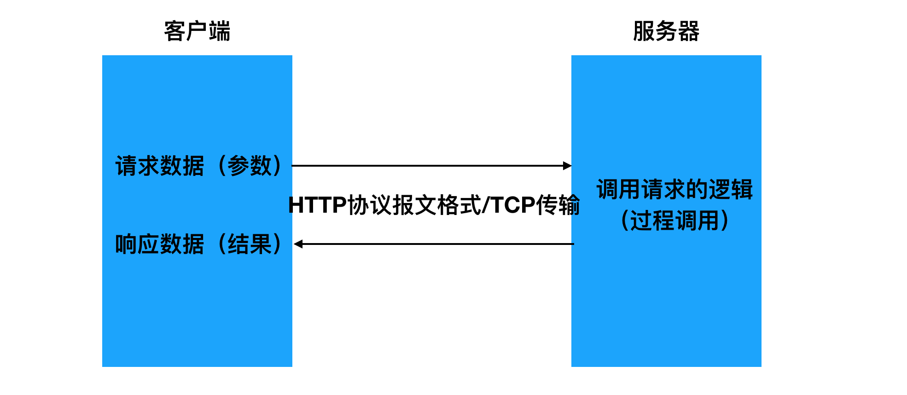

RPC简介
概念说明
关于RPC的概念，我们可以从广义和狭义来分别进行理解。
广义
我们可以将所有通过网络来进行通讯调用的实现统称为RPC。
按照这样来理解的话，那我们发现HTTP其实也算是一种RPC实现。

狭义
区别于HTTP的实现方式，在传输的数据格式上和传输的控制上独立实现。比如在机器间通讯传输的数据不采用HTTP协议的方式（分为起始行、header、body三部份），而是使用自定义格式的二进制方式。
我们更多时候谈到的RPC都是指代这种狭义上的理解。
优缺点
相比于传统HTTP的实现而言：
优点
- 效率高
- 发起RPC调用的一方，在编写代码时可忽略RPC的具体实现，如同编写本地函数调用一样
缺点
- 通用性不如HTTP好 因为传输的数据不是HTTP协议格式，所以调用双方需要专门实现的通信库，对于不同的编程开发语言，都要有相关实现。而HTTP作为一个标准协议，大部分的语言都已有相关的实现，通用性更好。
HTTP更多的面向用户与产品服务器的通讯。
RPC更多的面向产品内部服务器间的通讯。例如 thrift
RPC结构
RPC的设计思想是力图使远程调用中的通讯细节对于使用者透明，调用双方无需关心网络通讯的具体实现。因而实现RPC要进行一定的封装。
RPC原理上是按如下结构流程进行实现的。

流程：
- 调用者（Caller, 也叫客户端、Client）以本地调用的方式发起调用；
- Client stub（客户端存根，可理解为辅助助手）收到调用后，负责将被调用的方法名、参数等打包编码成特定格式的能进行网络传输的消息体；
- Client stub将消息体通过网络发送给对端（服务端）
- Server stub（服务端存根，同样可理解为辅助助手）收到通过网络接收到消息后按照相应格式进行拆包解码，获取方法名和参数；
- Server stub根据方法名和参数进行本地调用；
- 被调用者（Callee，也叫Server）本地调用执行后将结果返回给server stub;
- Server stub将返回值打包编码成消息，并通过网络发送给对端（客户端）；
- Client stub收到消息后，进行拆包解码，返回给Client；
- Client得到本次RPC调用的最终结果。
定时任务实例
开源的优秀RPC框架
阿里巴巴 Dubbo：https://github.com/alibaba/dubbo
新浪微博 Motan：https://github.com/weibocom/motan
gRPC：https://github.com/grpc/grpc
rpcx ：https://github.com/smallnest/rpcx
Apache Thrift ：https://thrift.apache.org/